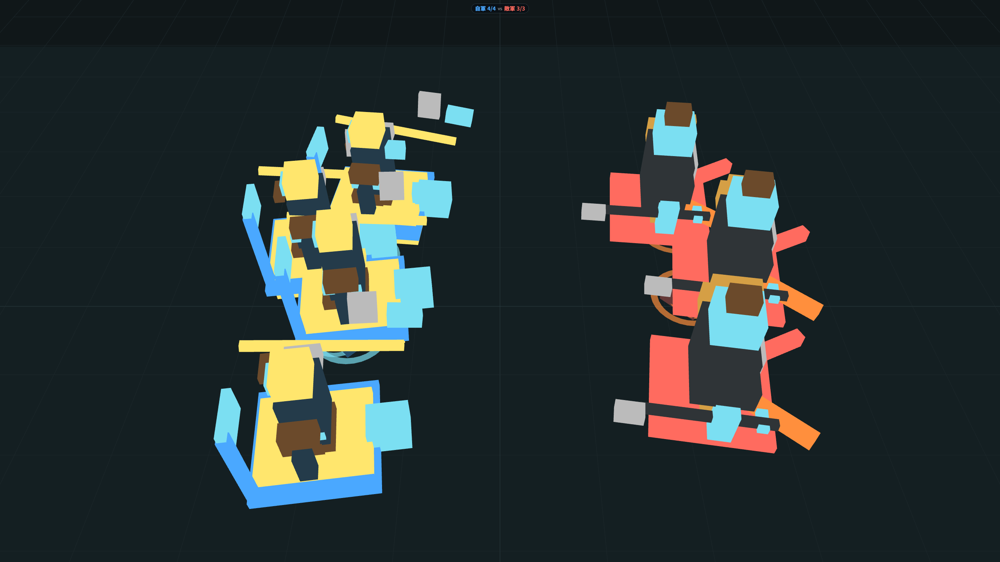
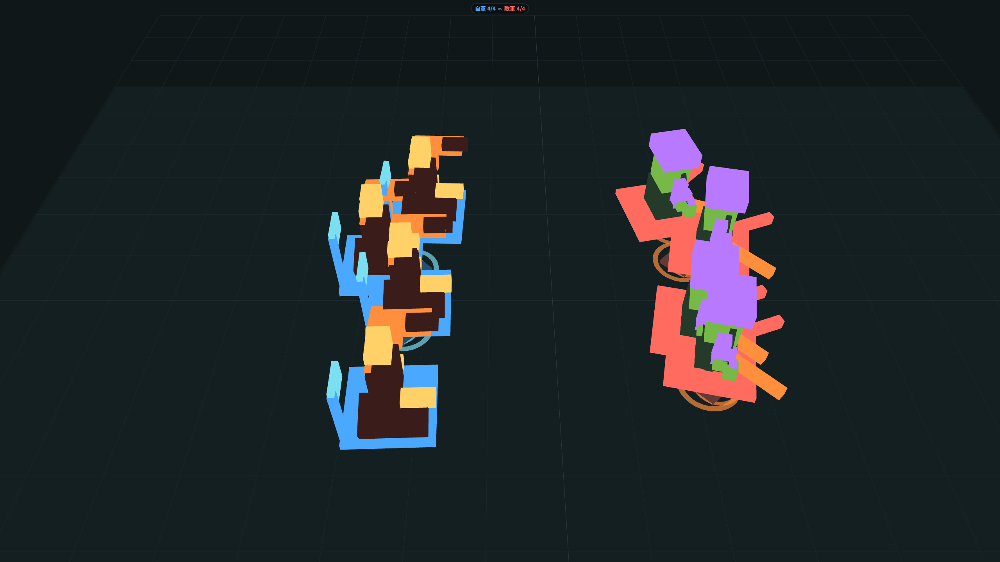
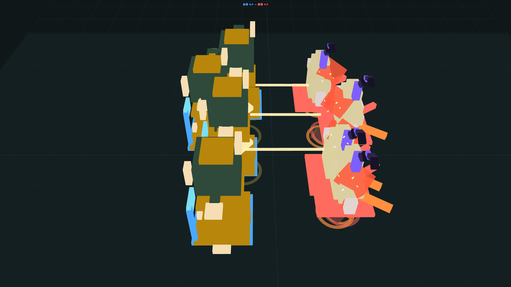
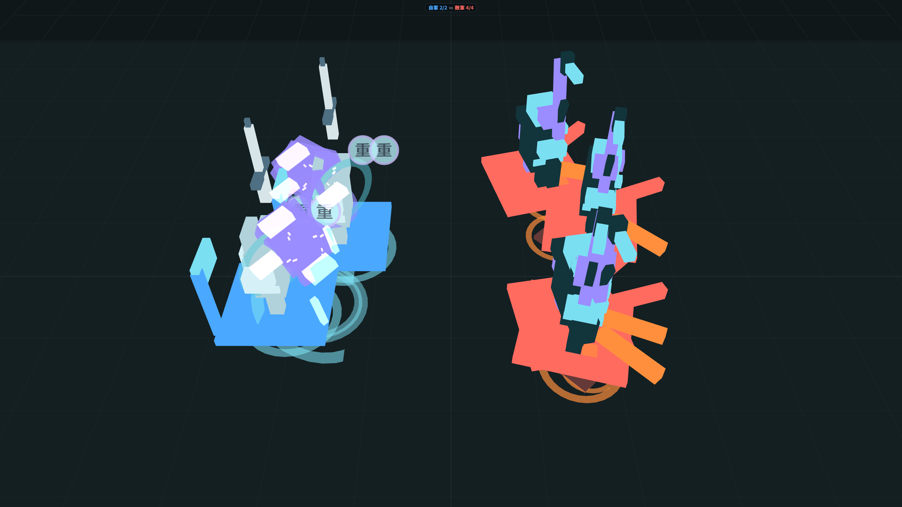
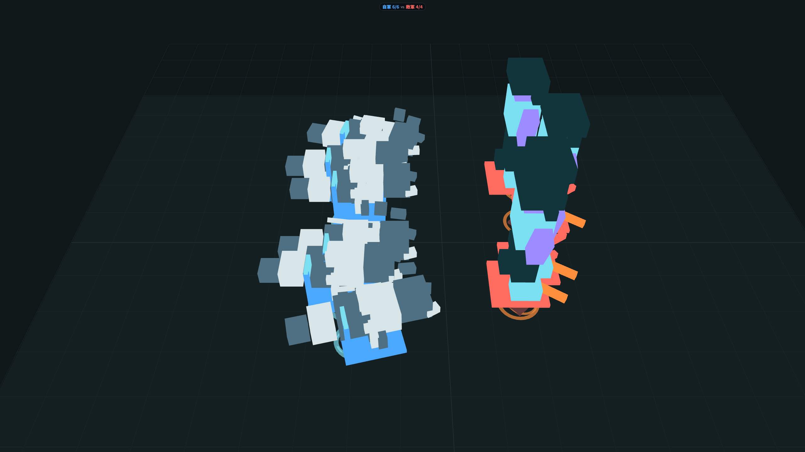
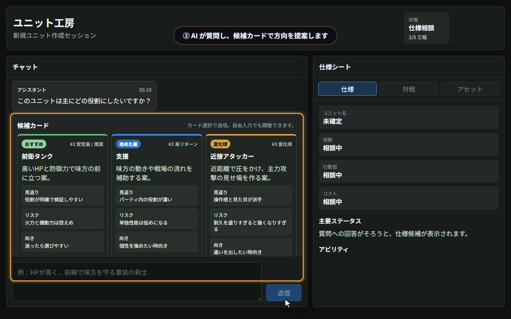

日本語の一文から「検証済みの動くゲームユニット」を作る実験機
VoxelArenaForge でわかった、
安いモデルを現場で回すための作り方の話
① 高価なモデルは必須ではない。「型」と「自動検査」を作り込めば、 軽量モデルだけの構成でも量産が回る(型の成熟前 25% → 現在 10/10)
② 品質保証は人手レビューではなく、仕組みで担保できる。 検査を通らない生成物は一切ゲームに入らない。だから安いモデルの実験がノーリスクになる
③ 原料は既存資産で足りる。 仕様書のテンプレート・マスタデータ定義・アセット台帳 — これを LLM が読める「型」に固め直す作業が本体だった
題材はオートバトルのユニット制作。狙いは「LLM 生成物を安全に量産ラインに乗せる方法」の実証
画面で起きていること:





実 API で生成された 1,534 ランからの選抜。すべて検証済みで、その場でリプレイ再生できる

ユニットの動きは2層でできています。生成するのは下の層だけです:
| ユニット AI(頭脳) | いつ動く・誰を狙う・どの行動を出すかを毎瞬決める。 7種の既製テンプレートから選ぶだけ — 生成しない(例: Kiter=距離を取って撃つ) |
|---|---|
| 行動の指示書(生成物) | AI が「今スキル1」と決めた瞬間に呼ばれ、その技が具体的に何をするかを返す。 LLM が生成するのはこの指示書10枚 — 出撃時・移動・通常/強攻撃・スキル×2・被弾・転倒・死亡 |
戦い方の頭脳は検証済みの既製品。生成の自由度は「技の中身」に限定されるので、棒立ちや迷走が構造的に起きない
指示書のやることは1つだけ:
次のスライドのコードは、この読み方だけで追えます:
「skill1: … = スキルを使うときの指示書」「return [...] = 返す命令カードの束」
export const unitScript: UnitScriptV1 = {
version: 1,
init: () => [
commands.equip('chain_snare_tool'),
commands.equip('rider_lance_polearm'),
commands.mount('void_horse')
],
…(move / turn / basicAttack 略)…
skill1: (ctx: ActionContext) => {
if (!ctx.cooldowns.ready('skill1')) return [];
const output: Command[] = [
ctx.commands.areaSlow({
center: ctx.intent.targetPosition ?? ctx.self.position,
radius: 4,
slowRatio: 0.5,
duration: 2,
vfx: 'chain_tether_spark'
}),
ctx.commands.startCooldown('skill1', 7)
];
return output;
},
スライド3の依頼文に対して、軽量モデル(flash)が初回一発で出したコードの抜粋(無修正)
equip / mount の ID はすべてアセット台帳の実在 ID注目してほしいのは賢さではなく語彙の狭さ。決められたコマンドと実在 ID しか書けない形に誘導している
読み方(前スライド): init=出撃時の指示書、skill1=スキルの指示書、ready('skill1')=「もう使える?」の確認、return [...]=返す命令カードの束
script.ts(40,9): error TS2353:
'damageType' does not exist in type
'{ type: "imbueSelf"; attribute: ...;
duration: number; ... }'
flash が imbueSelf に存在しないプロパティを発明 → コンパイラが拒否
エラー文をそのまま実装 AI に返送 → 修正版を再生成 → 全検査を通過 → 対戦シミュレーションへ
「水晶の決闘者」実測ログより。人間は一切介在していない。弾いた理由は失敗パターン集に蓄積され、次回から先回りされる
通ったユニットはその場で対戦し、勝敗・与ダメ・生存時間が数値とリプレイで残る
いま見た工程1〜3を、ライブで通します。注目ポイント:
LLM に自由にコードを書かせない。型に流し込ませる。この実証で用意した型と、現場での対応物:
| コマンド API(16種) | ⇔ | 社内のスキル・アクション定義。生成コードはこのメニューを返すことしかできない |
|---|---|---|
| データスキーマ(23本) | ⇔ | マスタデータ定義。検証を通らないデータは次の工程に進めない |
| 素材カタログ(43点) | ⇔ | アセット管理台帳。実在する ID しか参照できない |
| 参照ドキュメント(6本) | ⇔ | 通った実例1本+レビューで弾いた理由の記録(失敗パターン集) |
新規開発というより、すでにある資産を「LLM が読める契約」に固め直す作業が中心だった
できること = Command 型(抜粋。全16種):
export type Command =
| { type: 'meleeArc'; damage: number;
radius: number; angle: number;
damageType: DamageType; … }
| { type: 'areaSlow'; center: Vec2;
radius: number; slowRatio: number;
duration: number; vfx?: string }
| { type: 'applyStatus';
targetUnitId: string;
status: StatusId; duration: number; … }
| …equip / mount / moveToward /
areaDamage / playAttributeVfx など
見えるもの = ActionContext 型(全部):
export interface ActionContext {
self: UnitSelfView; // 自分の位置とHP比率
intent: ActionIntent; // 攻撃対象・目標地点
commands: CommandFactory; // 左の16種
scalars: { attack: number;
moveSpeed: number };
cooldowns: { ready(id: string): boolean };
rng: { next(): number }; // シード付き乱数
}
敵の一覧も、HP の生値も、座標系の詳細も渡さない。語彙と視界を絞るほど、軽量モデルの合格率が上がった
人手レビューを増やすのではなく、検査を仕組みにする。これが安いモデルを使う前提条件
| 仕様の対話 | → | 軽量級(flash)で成立。全構成で共通 |
|---|---|---|
| コード生成(現在の型) | → | 軽量単独でも 10/10。未見のお題でも同じ結果。中量級(pro)でも 10/10 |
| 同じ軽量モデル(初期の型) | → | 25% — 差を作ったのはモデルではなく、型と失敗パターン集の成熟 |
「作らせて検証する」が向くのは、出力がデータやスクリプトの形に落ちるコンテンツ:
検証の土台(この実証での決定論シミュレーション)がない領域は、生成より先に土台づくりから
うちのタイトルで「原型箱」になり得る資産はどれか(仕様書テンプレート・マスタ定義・社内 API・アセット台帳)
「決定論シミュレーション」に当たる検証の土台は何か(自動テスト・リプレイ・バトルシミュレータ)
どの職種の仕事が「選ぶ・見極める」に変わるか。人のレビューはどこに残すべきか
詳細は配布記事(全6本)で:体験編/原型箱編/やり取り方式編/受け入れ検査と計測編/エージェント開発記/展望編
配布ページ:hitsuki-ban.github.io/voxel-arena-forge-presentation(スライドと記事はここから)
手元で試す:pnpm install → pnpm demo:local:mock(API 不要)
補足: この実験機自体も約3週間、ほぼ AI コーディングエージェントで開発(詳細は記事第5回)
台詞は実演シナリオと同じものをそのまま使う(ランブック参照)